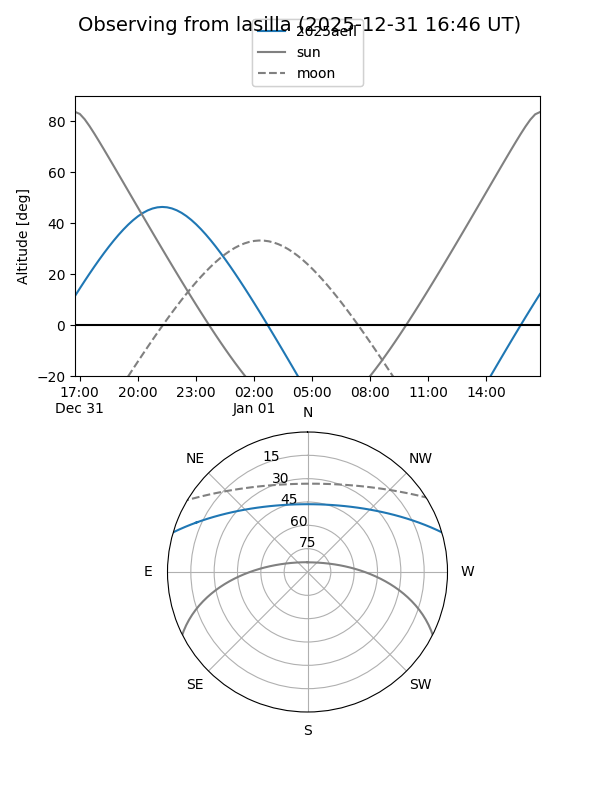
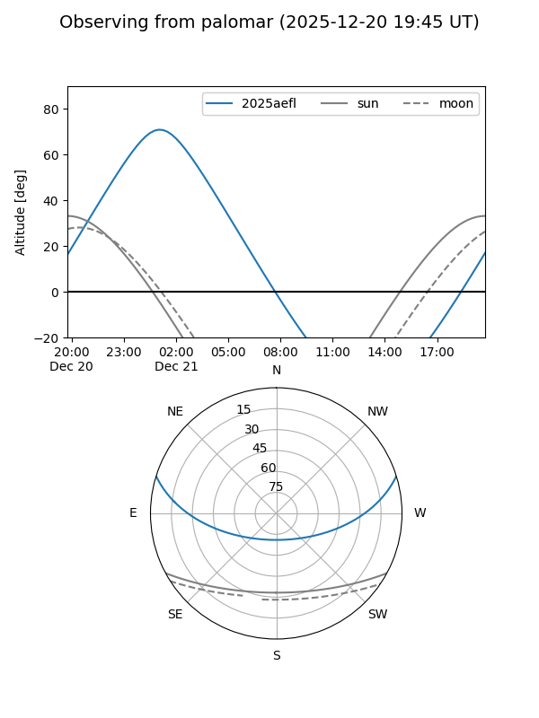
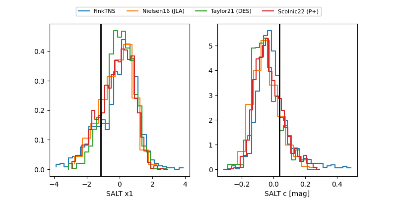

2025aefl
Target 2025aefl at 2025-12-21 06:18
Aliases and brokers:
FINK: fink-portal.org/ZTF25acehbcb
Lasair: lasair-ztf.lsst.ac.uk/objects/ZTF25acehbcb
ALeRCE: alerce.online/object/ZTF25acehbcb
TNS: wis-tns.org/object/2025aefl
YSE: ziggy.ucolick.org/yse/transient_detail/2025aefl
alt names
ZTF25acehbcb (ztf,fink_ztf)
2025aefl (tns,yse)
ATLAS25ool (atlas)
Coordinates:
equatorial (ra, dec) = 348.6264,+14.18475
equatorial (HMS+DMS) = 23:14:30.34,+14:11:05.10
galactic (l, b) = (90.2894,-42.46058)
Flags:
Photometry:
last ztfg=20.02, ztfr=19.82
2 ztfg, 8 ztfr detections
Lightcurve

Visibility


Additional plots
